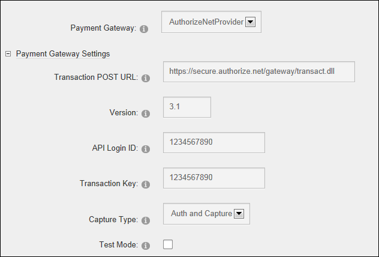

Configuring Authorize.Net as the Payment Gateway
How to set and configure Authorize.Net as the payment provider for your Store using the Store Admin module. Important. Before configuring this setting, you must create an account at http://www.authorize.net to obtain the account information.
- Go to the Store Admin module.
- If the Store Info page isn't displayed, click the Store Info link.
- At Payment Gateway, select AuthorizeNetProvider.
- In the Transaction POST URL, text box enter the POST URL provided to you by Authorize.Net.
- Optional. In the Version text box, edit the version number of the AIM gateway you are posting to if required. This field is pre-populated with the version number "3.1" which is the typical choice, unless you are told otherwise.
- In the API Login ID text box, enter the API Login ID provided by authorize.Net.
- In the Transaction Key text box, enter the transaction key provided by authorize.Net.
- At Capture Type, select from the following options:
- Auth and Capture: This option authorizes the payment and captures the funds.
- Auth Only: This option authorizes the payment but does not capture the funds. This is the default option.
- Capture Only: This option captures the funds but does not authorize the payment.
- At Test Mode, select from these options:
- Mark
 the check box to use the store in test mode only. Transactions are not live in this mode.
the check box to use the store in test mode only. Transactions are not live in this mode. - Unmark
 the check box to begin accepting payments.
the check box to begin accepting payments.

-
Click the Update button.